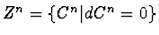

Some examples of applications are: (1) possibility to write supergravity equations for any N-extended Minkowski superspace and to find out possible models for these superspaces; (2) possibility to study stability of nonholonomic systems (ballbearings, gyroscopes, electro-mechanical devices like a rotor collector with a gliding contact; waves in plasma, etc.); (3) description of an analogue of the curvature tensor for nonlinear nonholonomic constraints and the fields of solids or their surfaces, e.g., cones, as in optimal control; (4) a new method for the study of integrability of dynamical systems.
The above problems are particular instances of the general problem of computing the cohomology or homology of a given Lie algebra or superalgebra with various coefficients. At present, due to computational difficulties, only a limited number of cohomologies for different classes of Lie (super)algebras is known. That is why the application of computer algebra methods is important in this problem.
The program takes as an input the commutator table of Lie (super)algebra (for the mentioned above (super)algebras of vector fields the program constructs these tables itself), the type of a module (trivial or adjoint currently), the number of required cohomology and, in the case of infinite-dimensional graded algebra, the grade of the cohomology. Then the program constructs the determining equations for cocycles

, expressions for coboundaries Bn = dCn-1 and computes the cohomology as a quotient space Hn = Zn/Bn. As a result, the program prints out non-trivial cocycles, i.e., basis elements of Hn. Some results of computation are presented.